BR One versão LightWeight
Dentro do Ambiente deve ser aberto o navegador e realizar a seguinte pesquisa:
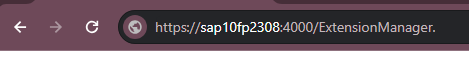https://<hostname>:<port>/ExtensionManager.
Adminstração -> Licença -> Administração de licenças
Dentro do “Hostname” será substituído pelo endereço do servidor.
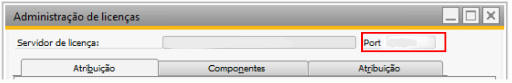E no “Port” deve ser colocado o valor da porta ex: “4000”
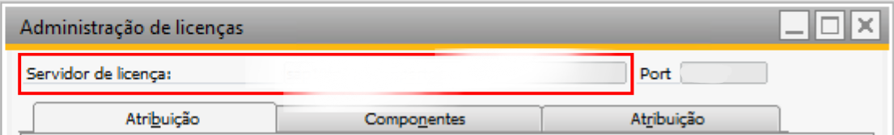Exemplo ficando dessa forma:
https://sap10fp2308:4000/ExtensionManager.
Ao realizar o acesso será aberto uma tela de login para que seja possível administrar a instalação do add-on.
Login e senha são de acordo no qual foi configurado a instalação do SAP.
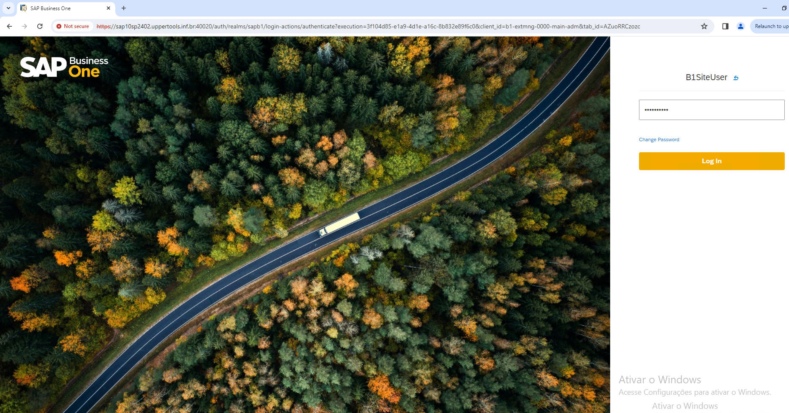Antes de instalar o arquivo dentro do Extension Manager, devemos selecionar o servidor para a seleção dos campos disponiveis dentro do servidor selecionado.
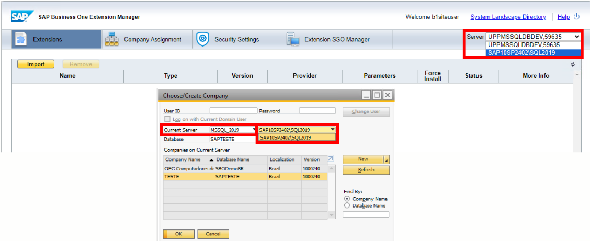Dentro da aba Extensions devemos selecionar a opção “Import”.
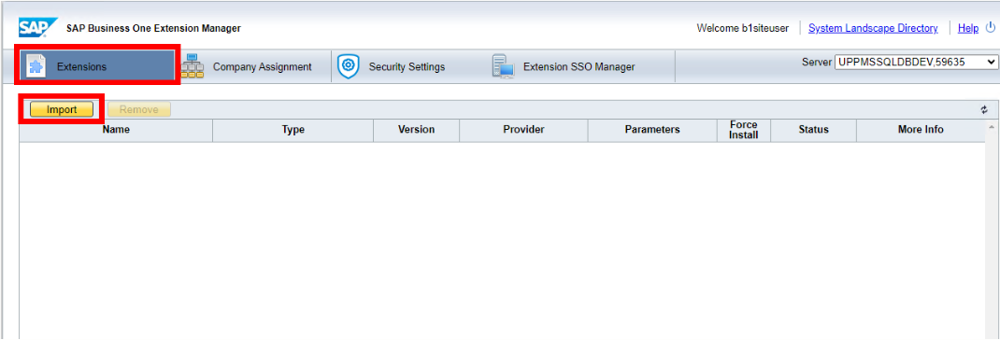Ao selecionar ”Import” será aberto uma tela para que seja mostrado o caminho até o arquivo em ”ZIP” para podermos instalar .
Na tela devemos selecionar “Browse” para que possamos definir o caminho até o arquivo.
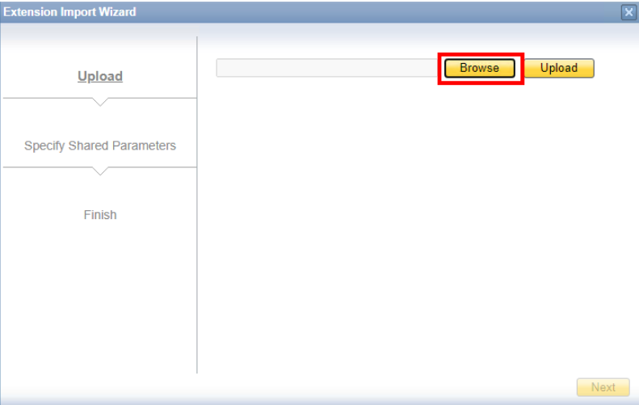Ao selecionar será aberto a tela de Explorador de arquivos para que seja realizado a seleção do arquivo de instalação.
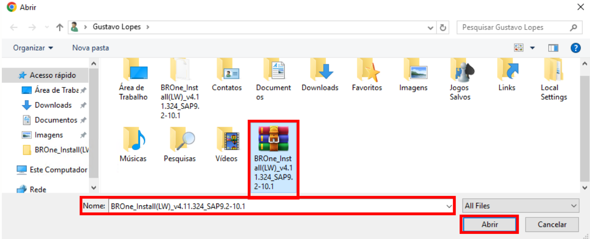Ao selecionar o arquivo, o campo ”Nome” é preenchido, sendo assim clique em ”Abrir”
Fazendo com que o campo seja Preenchido:
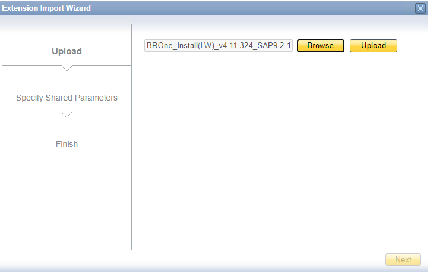Sendo assim deve ser selecionado o Upload:
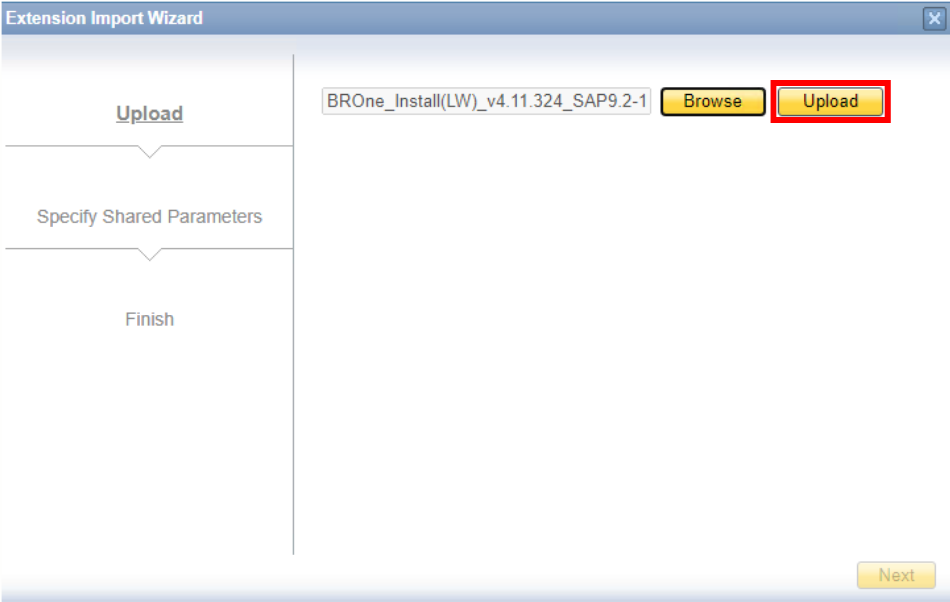Com isso o arquivo é levado para a tela principal.
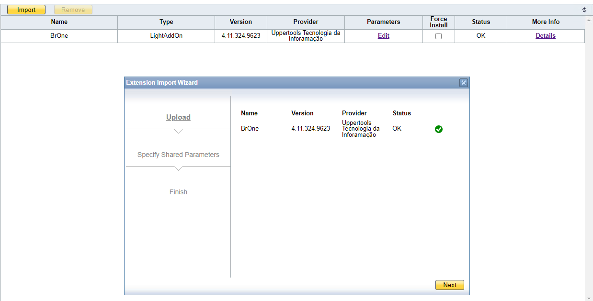Na tela ”Extension Import Wizard” apenas selecione ”Next” até a última etapa.
Para que force a instalação do add-on deve selecionar o campo “Force Intall”.
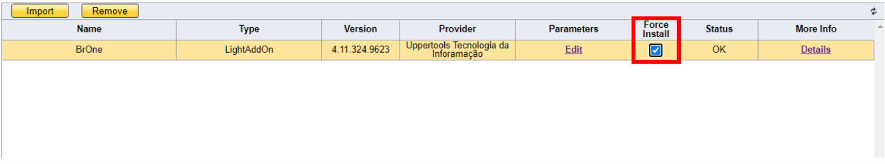Passando para a próxima aba: “Company Assingnment”
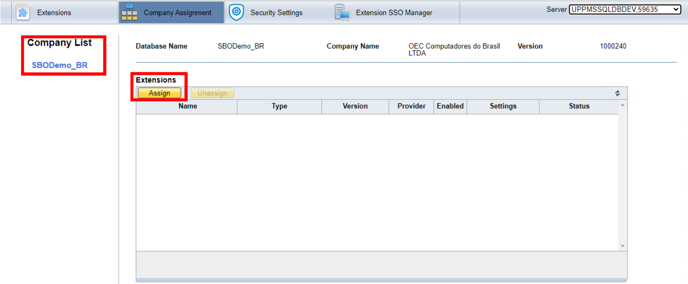É onde eu posso selecionar quais bases eu quero que meu add-on seja instalado.
Na opção “Assign” será aberto a tela com o arquivo que fizemos o Upload na aba “Extensions”.
Para que seja instalado na base que selecionamos.
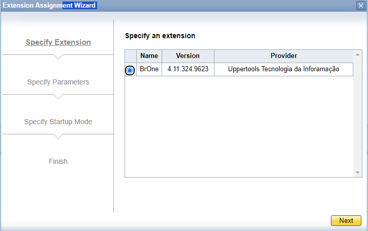Só dar “next” em todas as Etapas e estará pronto para ser instalado.
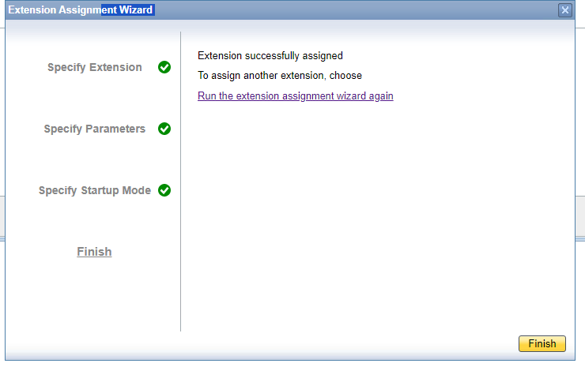Com isso selecionamos o ambiente o ambiente no qual foi feita a instalação. realizamos o login na base e finalizamos a instalação por dentro do SAP.
Administração -> Add-on -> Administrador Add-on
Estará disponível para a instalação do add-on.
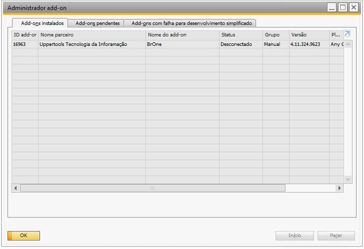